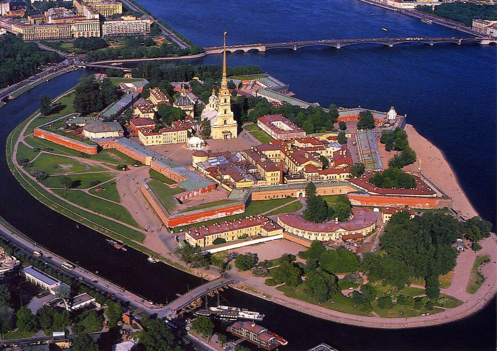

Путеводитель по Санкт-Петербургу
Санкт-Петербург — второй по величине и значимости город в
России. Он был основан в 1703 году Петром I. Сегодня Петербург —
это центр культурной, деловой и общественной жизни. Практически
ежедневно здесь проходят увлекательные мероприятия — фестивали,
концерты, праздники, форумы. В музеях города всегда есть шанс
кроме постоянной экспозиции увидеть необычную временную
выставку. Стоит ли говорить о том, что в Петербурге огромное
количество достопримечательностей и памятников архитектуры?
Практически каждый дом имеет свою увлекательную историю или
легенду. Как не растеряться в этом многообразии возможностей,
которые предлагает Северная столица? Путеводитель по
Санкт-Петербургу поможет сориентироваться туристам, прибывающим
сюда впервые, а для тех, кто часто бывает здесь, откроет новые
грани этого удивительного города.
Эрмитаж

Приглашаем вас на экскурсию в Государственный Эрмитаж –
самый знаменитый музей Санкт-Петербурга! Его коллекция
поражает воображение, а от интерьеров Зимнего Дворца, в
котором находится музей, невольно захватывает дух.
Государственный Эрмитаж в Санкт-Петербурге по праву входит в
ТОП лучших музеев мира. Здесь собрано более 1 миллиона
произведений изобразительного и прикладного искусства, среди
которых шедевры Леонардо да Винчи, Рембрандта, Эль Греко,
Пикассо и Кандинского. Кроме того, в музее вы увидите
настоящие рыцарские доспехи и оружие, знаменитые античные
статуи, уникальные предметы одежды и украшения древнейших
цивилизаций Запада и Востока, египетские мумии и другие не
менее интересные экспонаты. Экскурсия в Эрмитаж познакомит
вас с жемчужинами коллекции музея, а профессиональный гид
расскажет также и о Зимнем дворце, который знаменит не
только своим убранством, но и значительной ролью в истории
нашей страны.
Спас на Крови

Храм во имя Воскресения Христова в Санкт-Петербурге,
получивший в народе название «Спас на Крови» — это
мемориальный храм, возведенный в память о трагической
кончине императора Александра II. Собор стоит над местом
смертельного ранения Государя. Здесь на набережной
Екатерининского канала (сейчас канала Грибоедова), император
был смертельно ранен революционерами-народовольцами 1 марта
1881 года по старому стилю. Трагическое событие, потрясшее
всю страну, стало толчком к созданию Храма-Памятника, Храма
покаяния народа за убийство своего царя.
Петропавловская крепость

Петропавловская крепость – это не самый настоящий центр
Санкт-Петербурга. Географически достопримечательность
расположена на так называемом Заячьем острове и по сути
является первым сооружением в Петербурге. В 1703 году Петр I
заложил крепость с целью защиты от шведов во время войны со
Швецией. Однако, за всю свою историю крепость так и не была
использована в целях обороны, а стала началом строительства
нового для Российской империи города. Сегодня
Петропавловская крепость – объект культурного наследия,
популярный среди туристов. Если вы в Петербурге впервые,
обратите внимание на классическую обзорную экскурсию по
городу с Петропавловской крепостью. Любители квестов оценят
необычные экскурсии по крепости: интерактивы для школьников
и программы для взрослых с участием Петра Первого. А если вы
хотите познакомиться с достопримечательностью в составе
небольшой группы экскурсантов, то рекомендуем посетить
VIP-экскурсию по Петропавловской крепости.